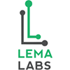

LEMA LABS
Incubated at IIT Madras Incubation Cell @IIT Madras Research Park
Lema Labs is a company founded by IIT Alumni under the guidance of faculty members of IIT Madras.
They are striving to build an ecosystem for emerging technologies by providing support to stakeholders which include student community,
educational institutions and the industry.
Internet Of Things
Internet of Things
It is defined as the network of physical objects – devices, vehicles, buildings and other items
– embedded with sensors, electronics, software and network connectivity that enables these objects to get the ability to sense and communicate.
There are now about 4.6 billion connected devices excluding phones, tablets and laptops.
A number that is expected to increase to 15.3 billion in the next five years according to the Ericsson Mobility report.
A recent study released by Gartner says that 43% of all companies are using or plan to implement an IoT application.
Machine learning is the science of getting computers to act without being explicitly programmed.
In the past decade, machine learning has given us self-driving cars, practical speech recognition, effective web search, and a vastly improved understanding of the human genome.
Machine learning is so pervasive today that you probably use it dozens of times a day without knowing it.
Many researchers also think it is the best way to make progress towards human-level AI